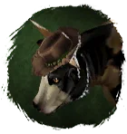
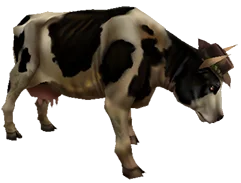

Открыть в интерактивной вики →

| Уровень | 70 |
|---|---|
| Прокачка | нет |
| Ранг в стае | 10 |
| Здоровье | 2500 |
| Мана | 1000 |
| Выносливость | 1800 |
| Статистика | Уровень: 90, ранг: 10, здоровье: 2900, мана: 1000, выносливость: 1800 |
Цена
100  Платина
Платина
ПлатинаГде взять
Покупается в Деревне Романа  Роман, Мертвом поселении
Роман, Мертвом поселении
Роман, Мертвом поселенииНавыки


Скины
Доп. информация
Требуемый уровень: 70
Появляется случайно на полях в Приселке Трентиса а также в Вымершем поселении
Цена: 100 платины
После отправки можно забрать у Романа за 1 000 золота
Может получать опыт — НЕТ
Описание
 | Злобная и упрямая скотина, но незаменимый боевой товарищ. Ревёт, поднимает на рога, топчет и кусает. Не слишком священная эта корова. Атакует физически, ментально и издалека. Использует: Рёв, Боевой клич, Землетрясение, Таран, Удар головой, Укус, Критический удар, Толстокожесть, Ярость. | |